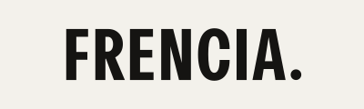

Marca. Avatar de redes, favicon chico.
frencia-mark.svgMarfil #EBEAE6 sobre grafito #0D0E10.
frencia-wordmark.svg
Tinta #151412 sobre marfil #F3F1EB.
frencia-wordmark-light.svgDel icono, no al revésMayúsculas condensadas y el punto final: el mismo gesto que FREN / CIA, en la tipografía del sistema. El icono de la app no se toca.
Una sola tintaNunca en lume: la marca es tinta sobre su campo, también sobre el Fondo de luces. Sin degradados, sin contorno, sin sombra.
AireMargen libre de al menos la altura de la E alrededor. No se escribe FRENCIA en texto corriente: en la interfaz es "Frencia".